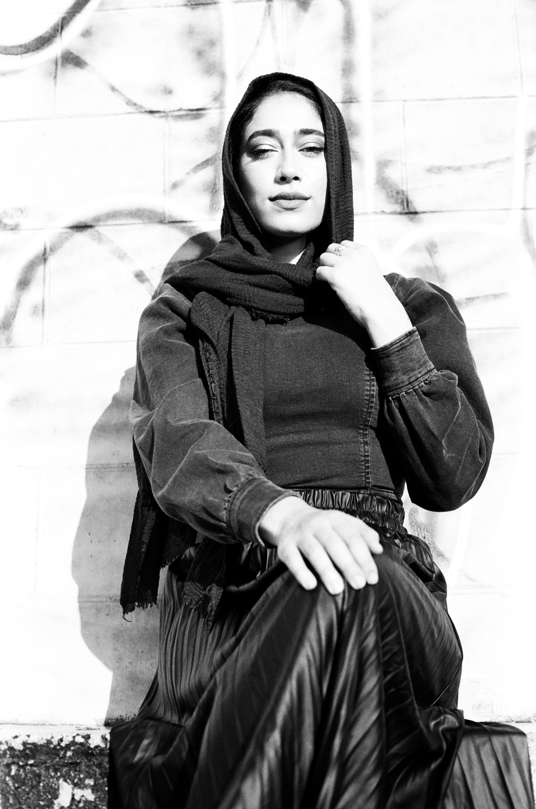
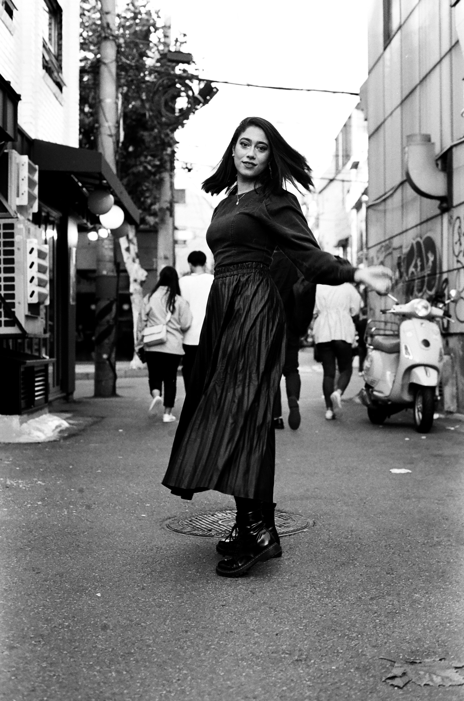
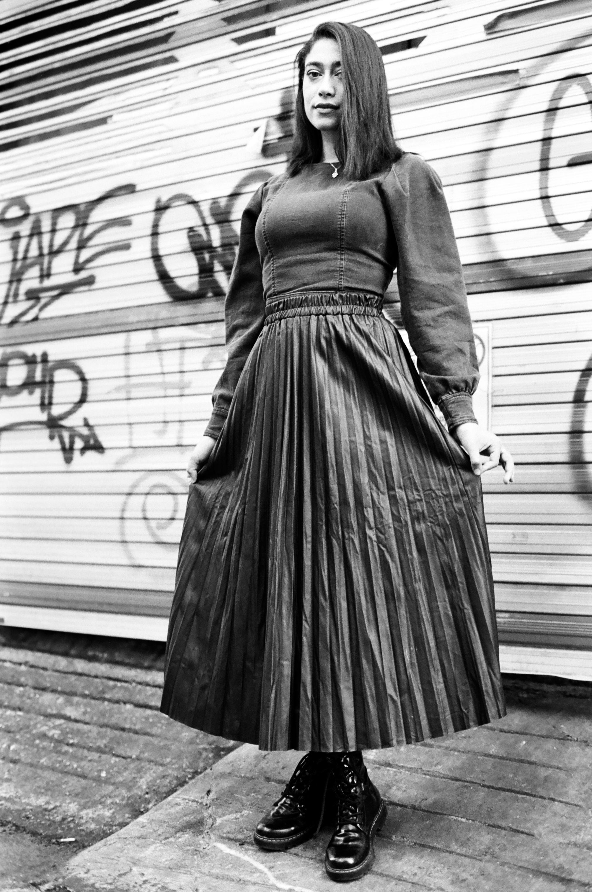
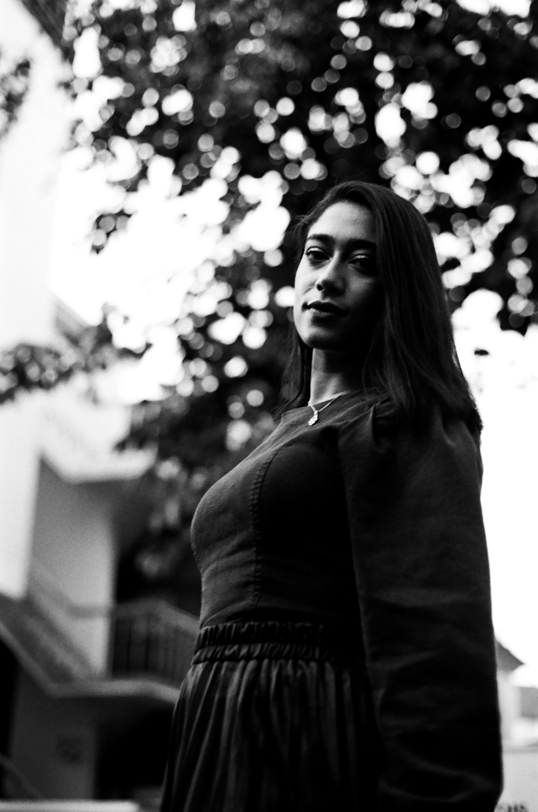
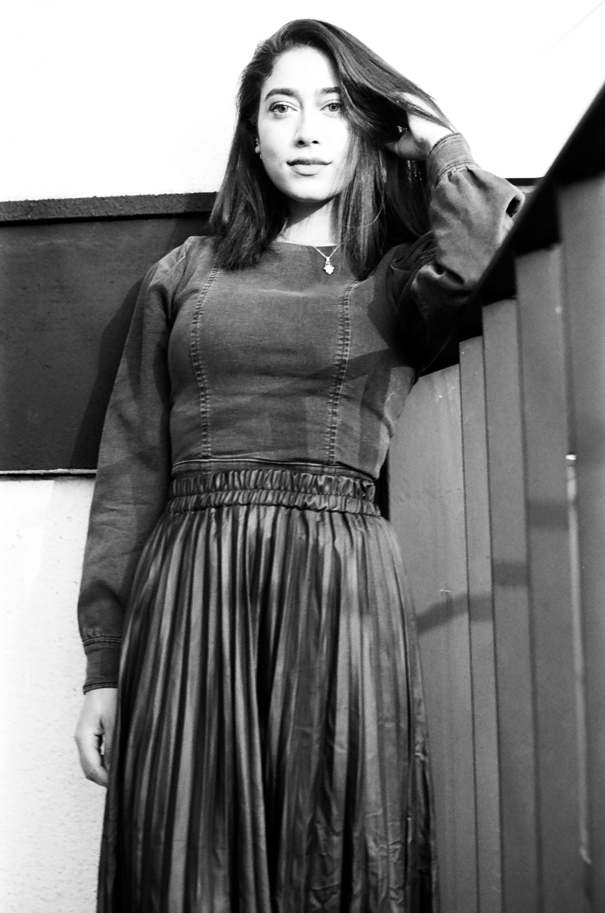
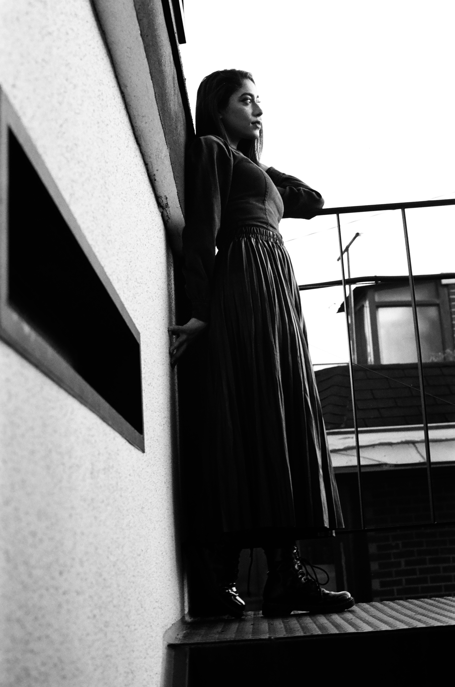
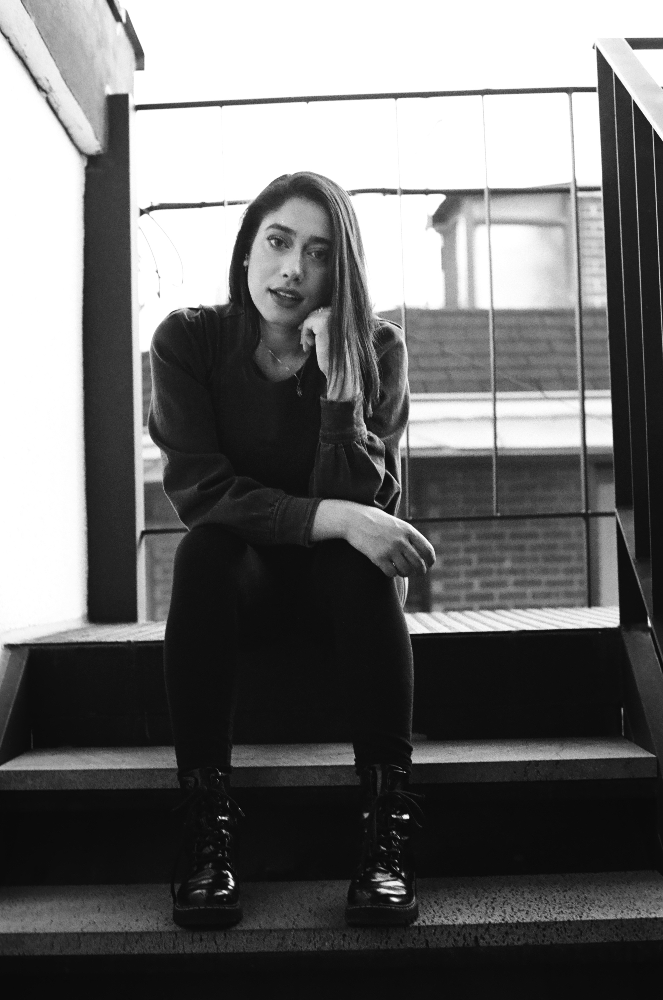

Nour Black & White
Taking the pictures in monochrome felt like the epilogue to the dropping of the hijab. An echo of her former self and yet, the absence of color was like something frozen in time in the absence of space. The same way a memory seems not to take up any space. Nour was a radiant subject illuminating every location we found to take pictures. And moving from the golden-nebulous color film to the black and white scale, retold the same story from a different vantage point. A point at which movement could be seen but was still an echo approaching the present.






